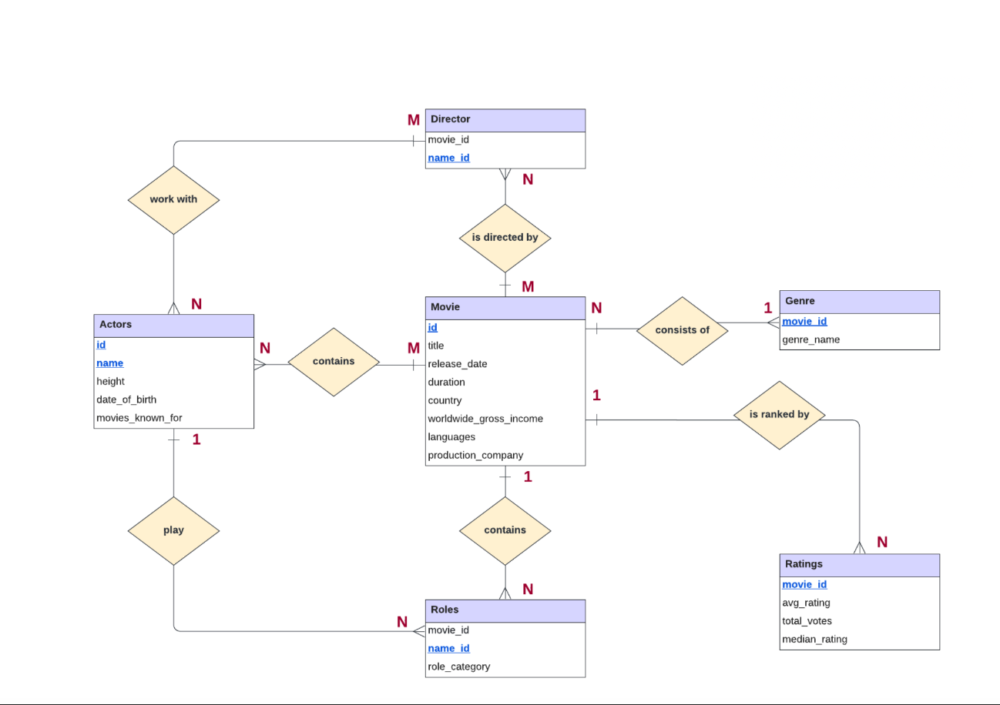

01 / MINI DATA SCIENCE PROJECT
Video Game Review Scores
Explored game features and built a predictive model to estimate review scores for unseen games.
View notebook ↗ Download notebook ↗Hi, I’m Tia Sindhu. I’m a junior studying Information and Data Science with minors in Computer Science and Statistics at the University of Illinois Urbana-Champaign, exploring how data, technology, and thoughtful design can solve real problems.
Explore my work01 / SELECTED WORK
Machine learning, databases, research, and creative computing.
01 / MINI DATA SCIENCE PROJECT
Explored game features and built a predictive model to estimate review scores for unseen games.
View notebook ↗ Download notebook ↗02 / MINI DATA SCIENCE PROJECT
Analyzed how food choices relate to calories and nutrients using statistical methods and visualizations.
View notebook ↗ Download notebook ↗
03 / DATABASE DESIGN
Developed an IMDb-style database concept for movie details, cast and crew, genres, roles, and ratings. The project report documents user needs, entity relationships, and a relational design for exploring films and audience responses.
View SQL diagram ↗ Read project report ↗04 / DATABASE DESIGN
Designed a relational tennis database with entity relationships across players, matches, clubs, and courts, then wrote SQL queries to answer questions from the data.
05 / CREATIVE COMPUTING
Created an image mosaic in Python by calculating average pixel colors and matching each area of a base image to a tile image.
View final mosaic ↗ View notebook ↗ Download notebook ↗06 / RESEARCH
Coauthored a research proposal examining AI in technology recruiting, including questions of efficiency, fairness, bias, and candidate experiences.
Read research proposal ↗07 / COMPUTATIONAL MODELING
Built a NetLogo simulation exploring how awareness spreads through a community. Used agent-based modeling to examine how local interactions shape larger patterns.
08 / STAT 207 REFERENCE
A reference notebook exploring models that predict whether bank customers accept personal loans. The original notebook credits Brady Brooks, Conan Zhang, and Richard Taing.
View notebook ↗ Download reference notebook ↗09 / MACHINE LEARNING
Investigated whether rising oil prices affect energy access differently in low-income and high-income countries using World Bank data. Compared linear regression, random forest, and KNN models with R², MAE, and RMSE.
02 / ABOUT ME
I study Information and Data Science at UIUC with minors in Computer Science and Statistics, and I’m interested in machine learning and product management. I like taking a question from messy data to a clear, useful answer.
Outside the classroom, I’ve led a Data Science Club team, mentored students in Python and machine learning, and served as Vice President of Inclusion for Kappa Delta.
Verified credential · Issued January 2026
View verified badge on Credly ↗03 / GET IN TOUCH
Interested in connecting about data science, AI, or product work?
Find me on GitHub